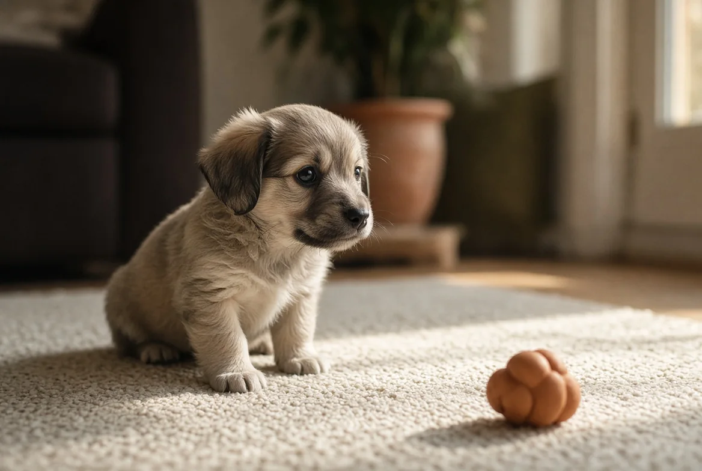

גור חדש בבית
בחודשים הראשונים לא בונים כלב מאולף. בונים כלב שהעולם לא מפחיד אותו. כל השאר — הישיבה, הרצועה, הפקודות — אפשר ללמד בכל גיל. את זה לא.
בקצרה — 40 שניות
- יש חלון זמן שנסגר. תקופת הסוציאליזציה הרגישה נמשכת בערך עד גיל 12–16 שבועות. מה שקורה בה משפיע על כל החיים, ואי אפשר להשלים אותה אחר כך באותה יעילות.
- איכות, לא כמות. חשיפה אחת נעימה שווה יותר מעשר חשיפות שהגור ניסה לברוח מהן. חשיפה שמפחידה אותו גורמת נזק, לא תועלת.
- גור ישן 16–20 שעות ביממה. רוב ה"התפרעות" בערב היא עייפות, לא עודף אנרגיה. גור עייף מדי נעשה חריף יותר, לא רגוע יותר.
- לא מענישים על צרכים בבית. זה לא מלמד איפה כן — זה מלמד לעשות בהסתר, וזה מאט את התהליך.
- נשיכות משחק הן נורמליות. הן לא סימן לתוקפנות ולא לכלב "רע".
1. החלון שנסגר
בגורים יש תקופה שבה המוח בנוי לקלוט את העולם ולהחליט מה בו בטוח. היא מתחילה בערך בגיל שלושה שבועות ודועכת סביב 12 עד 16 שבועות. אחריה, דברים חדשים מתחילים להיתפס כברירת מחדל כמשהו שכדאי לחשוד בו.
כל מה שהגור לא פגש עד גיל שלושה-ארבעה חודשים, הוא יצטרך ללמוד להתמודד איתו אחר כך. וזה תמיד יותר קשה. לכן החודשיים האלה שווים יותר משנה של אילוף בהמשך.
מה כדאי שיפגוש
לא רק כלבים ואנשים. הרשימה שמשנה בפועל:
אנשים
גברים עם זקן · אנשים עם כובע או קסדה · מישהו במדים · ילדים בגילים שונים · אנשים עם מקל, הליכון או כיסא גלגלים · מישהו שרץ
משטחים וסביבות
רצפה חלקה · מדרגות · סורגים מתכת · דשא רטוב · חול · מעלית · רכב · חניון תת-קרקעי
קולות
שואב אבק · אופנוע · זיקוקים · רעם · צופר · תינוק בוכה · פעמון דלת
מגע ותחזוקה
נגיעה באוזניים, בכפות, בזנב ובפה · הרמה · גזיזת ציפורניים · מברשת · נסיעה לווטרינר בלי טיפול — רק להיכנס, לקבל חטיף, לצאת
ואיך — זה החלק שקובע
- מרחוק קודם. לראות את הדבר מהצד, לא להיזרק לתוכו.
- הוא בוחר להתקרב, לא אתם מקרבים אותו. גור שנגרר לעבר משהו לומד שהוא לא שולט במה שקורה לו.
- משהו טוב קורה שם. חטיפים, משחק, קול רגוע.
- יוצאים לפני שנהיה יותר מדי. לסיים כשעוד טוב זה כלל הזהב.
- אם הוא נרתע — התרחקו. אל תחכו שיתגבר לבד. כאן מוסבר איך לזהות את זה בזמן.
2. המתח בין חיסונים לסוציאליזציה
זו אחת השאלות שהכי מבלבלות בעלים חדשים, ובצדק — יש בה התנגשות אמיתית. מצד אחד, סדרת החיסונים מסתיימת בערך בגיל 16 שבועות. מצד שני, בדיוק אז נסגר חלון הסוציאליזציה.
העמדה המקצובלת היום בקרב ארגוני התנהגות וטרינרית היא שכדאי להתחיל סוציאליזציה לפני סיום החיסונים, עם אמצעי זהירות — מפני שבעיות התנהגות שנובעות מחוסר סוציאליזציה הן סיבה שכיחה הרבה יותר לוויתור על כלבים מאשר מחלות שנתפסו בשלב הזה.
איך עושים את זה בזהירות: מפגשים בבית פרטי עם כלבים בוגרים מחוסנים ומוכרים · לשאת את הגור ברחוב כדי שיראה וישמע בלי לגעת ברצפה · הימנעות מגני כלבים ומאזורים שבהם מתקבצים כלבים לא מוכרים · כיתות גורים שמקפידות על חיסון ראשון והיגיינה.
זו החלטה לקבל עם הווטרינר שלכם. היא תלויה גם במצב המחלות באזור המגורים שלכם ובלוח החיסונים הספציפי של הגור. תשאלו — זו שאלה טובה ולגיטימית.
3. שינה — הפתרון לחצי מהבעיות
גור צריך בערך 16 עד 20 שעות שינה ביממה. ורוב הבעלים לא מאמינים לזה עד שהם סופרים.
מה שקורה כשאין מספיק: הגור נעשה חריף יותר, לא עייף יותר. הוא נושך חזק, רץ בטירוף, לא מקשיב לכלום, ובאמת נראה כמו כלב עם בעיה. זה מוכר לכל מי שגידל ילדים.
מה שעוזר: מקום שינה קבוע ושקט, במקום שממנו הוא רואה מה קורה אבל אף אחד לא עובר בו. אם קשה לו להירגע, אפשר לצמצם את השטח — חדר קטן, גדר נמוכה. ולא לוותר על "שעת שקט" קבועה גם באמצע היום.
אם הכלב שלכם עכשיו בגיל הזה — כל העמוד רלוונטי לכם, אבל שני דברים הכי דחופים: רשימת הסוציאליזציה, כי היא היחידה עם תאריך תפוגה, ושעות השינה, כי הן פותרות בעיות שנראות התנהגותיות.
הכלב שלכם כבר עבר את חלון הסוציאליזציה — וזה בסדר, כי אפשר לעבוד גם אחריו, רק לאט יותר ובמרחק גדול יותר. מה שכן קורה בגיל שלכם: דברים שכבר עבדו נשברים זמנית, והרבה בעלים חושבים שהם "הרסו את הגור". זה לא נכון. כאן מוסבר מה קורה בגיל הזה, וכדאי לקרוא גם על נביחה שמופיעה בשלב הזה לראשונה.
4. עשיית צרכים
העיקרון פשוט, וההצלחה תלויה כמעט רק בעקביות ובתדירות:
- לצאת אחרי כל אירוע: התעוררות, אכילה, משחק. ובנוסף כל שעה-שעתיים בגילים הצעירים.
- לתגמל בחוץ, מיד. לא כשחוזרים הביתה — שם, בשנייה שהוא סיים. שלוש שניות עושות את ההבדל.
- מקום קבוע. אותו אזור בכל פעם, כי הריח מסמן לו מה עושים שם.
- תאונה בבית — לא אומרים כלום. מנקים בשקט, ורושמים לעצמכם מתי זה קרה כדי לזהות את הדפוס.
שני דברים שחשוב לדעת: לנקות עם מנקה אנזימטי ולא בסבון רגיל — הריח שנשאר מזמין חזרה לאותו מקום. ולהימנע ממנקים על בסיס אמוניה, שהריח שלהם דומה לשתן.
ומבחינה פיזיולוגית: גור בן חודשיים לא באמת יכול להתאפק שעות ארוכות. "הוא עושה דווקא" זו כמעט אף פעם לא התשובה.
5. נשיכות משחק
גורים חוקרים את העולם עם הפה, וזה תקין לחלוטין. המטרה שלנו היא לא לעצור את זה בבת אחת אלא ללמד שליטה בעוצמה — וזה משהו שהם היו לומדים מהאחים שלהם.
- נשיכה חזקה מדי → המשחק נעצר. קול קצר, וקמים והולכים לעשר-עשרים שניות. הוא לומד שהעוצמה הזאת מסיימת את הכיף.
- להציע חלופה תמיד. יד נכנסת לפה → מוציאים ומחליפים בצעצוע. לא מספיק להגיד "לא"; צריך להגיד "זה במקום".
- לא להזיז את היד מהר. תנועה מהירה מעלה את ההתלהבות ומזמינה עוד נשיכה.
- לבדוק את שעון השינה. אם הנשיכות מתגברות בשעות קבועות — לרוב הערב — זה כמעט תמיד עייפות ולא בעיה.
6. להיות לבד
זו מיומנות שצריך ללמד, והכי קל ללמד אותה עכשיו. השיטה זהה למה שעושים בטיפול בחרדת נטישה — רק שכאן זה מניעה במקום תיקון, וזה הרבה יותר מהיר.
מתחילים משניות בודדות מעבר לדלת ועולים בהדרגה. יוצאים ונכנסים בלי דרמה. משאירים משהו טוב שקיים רק כשיוצאים. אם זה כבר קשה לו — כאן ההרחבה.
שלוש זוויות
AVSAB — האגודה הווטרינרית להתנהגות
העמדה הרשמית, ולמה היא חד-משמעית
הארגון פרסם עמדה מפורשת בשאלה של חיסונים מול סוציאליזציה: שלושת החודשים הראשונים הם החלון המרכזי, וסוציאליזציה צריכה להתחיל לפני השלמת החיסונים, עם אמצעי זהירות. הנימוק: בעיות התנהגות מחוסר סוציאליזציה הן סיבה שכיחה הרבה יותר לאובדן כלבים מאשר מחלות שנתפסות בשלב הזה.
מה לקחת: שזו לא דעה של מאלף אלא עמדה של ארגון וטרינרי. אם מישהו אומר לכם "תחכו לסוף החיסונים" — שווה להראות לו את זה.
ד"ר איאן דנבר
עיכוב נשיכה כדבר החשוב ביותר
וטרינר והתנהגותן, האיש שהמציא את מושג "כיתת גורים". הטענה המרכזית שלו: הדבר הכי חשוב שגור לומד הוא שליטה בעוצמת הנשיכה — לא ישיבה, לא רצועה. גור שלמד לווסת את הלחץ בלסת יגדל לכלב שגם אם ייבהל פעם בחיים, ההשלכות יהיו אחרות לגמרי.
מה לקחת: להפסיק לראות בנשיכות משחק מטרד. זו ההזדמנות ללמד את המיומנות הכי חשובה, והיא קיימת רק בגיל הזה.
הווטרינר שלכם
מי שמכיר את הגור ואת האזור
שתי הזוויות למעלה נותנות עיקרון. ההחלטה בפועל — מתי לצאת, לאן, ועם אילו אמצעי זהירות — תלויה גם במצב המחלות באזור המגורים שלכם ובלוח החיסונים הספציפי.
מה לקחת: לשאול את השאלה במפורש, ולא להסיק. זו שאלה טובה ולגיטימית, ורוב הווטרינרים ישמחו לענות עליה.
7. שש טעויות נפוצות
- לחכות עם הסוציאליזציה עד סוף החיסונים. הטעות היקרה ביותר בעמוד הזה. יש דרך אמצע — ראו למעלה.
- לזרוק אותו לגן כלבים. סביבה עמוסה עם כלבים בוגרים לא מוכרים היא לא סוציאליזציה. חוויה רעה אחת שם עולה חודשים.
- לחשוב שהוא לא עייף. ראו סעיף 3.
- להעניש על תאונות או על לעיסה. מייצר הסתרה, לא למידה.
- לתת לו לפגוש רק אנשים שאוהבים כלבים. הוא צריך גם אנשים שמתעלמים ממנו — זה מה שהוא יפגוש ברוב החיים.
- להתעלם מהגזע. טרייר, כלב רעייה וכלב שמירה מגיעים עם ציפיות שונות לגמרי. הזינו את הגזע כאן וחלק מהתוכן יתאים את עצמו.
דבר אחד · חמש דקות · שבוע
רשימת החשיפות
פתחו פתק בטלפון וכתבו חמישה דברים מהרשימות בסעיף 1 שהגור שלכם עוד לא פגש.
השבוע, אחד ליום. מרחוק, קצר, עם משהו טוב, ומסיימים לפני שנהיה יותר מדי.
למה דווקא זה: זו הפעולה היחידה באתר הזה שיש לה תאריך תפוגה. כל שאר מה שכתוב כאן אפשר לעשות גם בעוד חצי שנה — את זה לא.
מתי מתקשרים לווטרינר, לא לאתר
- שלשול או הקאה אצל גור — במיוחד לפני סיום החיסונים. גורים מתייבשים תוך שעות. מסלול המיון נמצא כאן, אבל אצל גור הסף נמוך: מתקשרים.
- לא אוכל, רפוי, או חניכיים חיוורות — רמת הסוכר אצל גורים צונחת מהר. זה דחוף.
- שיעול, הפרשה מהאף או מהעיניים, חום.
- צליעה שלא חולפת, או כאב כשנוגעים באזור מסוים.
- פחד קיצוני שלא מתרכך — גור שקופא, מסרב לזוז או מנסה להסתתר מכל דבר חדש. ככל שמטפלים מוקדם יותר, כך קל יותר.
מה שאנחנו לא יודעים. טווחי הגיל בעמוד הזה הם ממוצעים. גורים נבדלים זה מזה מאוד — גם בין אחים מאותו המלט — וגם הגזע והרקע לפני שהגיע אליכם משנים הרבה. אם משהו כאן לא מתאים לגור שלכם, זה לא בהכרח סימן לבעיה.
בסוגיית החיסונים מול הסוציאליזציה אנחנו הולכים עם העמדה המקובלת בארגוני ההתנהגות הווטרינרית, אבל ההחלטה בפועל היא של הווטרינר שמכיר את הגור ואת האזור שלכם.
המשך: לקרוא כלב · חרדת נטישה · נביחה · פרטי הכלב שלי
כל התוכן באתר הוא מידע כללי בגדר המלצה בלבד. הוא אינו מהווה ייעוץ וטרינרי, אבחון רפואי או תוכנית אילוף פרטנית, ואינו מחליף בדיקה של וטרינר מורשה או ליווי של מאלף מוסמך שרואה את הכלב. במצב חירום רפואי — פנו מיד לווטרינר או לחדר מיון וטרינרי.